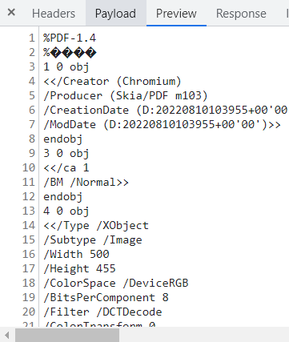

<article class="docs-article">
    <section class="docs-section" id="pdf">
        <div>

            <h1>Export form as PDF</h1> <br>
            <hr>

            <p>
                This feature enables users to export forms with submitted data as a pdf from the UI. Users will have an
                “Export PDF ” button in form view pages to click and get the form downloaded as a pdf in the browser
                itself.
            </p>
            <p>


                <br>
                

            </p>
            <p>


            </p>
            <h3>API Details</h3>
            <br>

            <p>
                <strong>API URL</strong> :
                &lt;form-flow-webapi-server>/form/&lt;form-id>/submission/&lt;submission-id>/export/pdf
            </p>
            <p>
                Optional params:
            </p>
            <p>
                <strong>timezone </strong>: A parameter to render form based on client timezone or any custom timezone.
            </p>
            <p>
                Eg:
                &lt;form-flow-webapi-server>/form/&lt;form-id>/submission/&lt;submission-id>/export/pdf?timezone=Asia/Calcutta
            </p>
            <p>
                <strong>API Method</strong>: GET
            </p>
            <p>
                <strong>API Response</strong>: Will be a blob response that can be used by the client to save it as a
                pdf


                <br><br>
                

            </p>
            <p>
                This feature requires the following prerequisites.
            </p>
            <ol>

                <li>A Chrome installation and its driver are required to render this form and print it as a pdf in
                    headless mode on the server side.
                </li>
            </ol>
            <p>
                Chrome driver path can be provided via env variable liek below
            </p>
            <p>
                In windows
            </p>


            <pre class="prettyprint"><code>CHROME_DRIVER_PATH=C:\driver\chromedriver.exe</code>
                </pre>


            <p>
                In Linux
            </p>


            <pre class="prettyprint">CHROME_DRIVER_PATH=/usr/local/bin/chromedriver
                </pre>


            <p>
                If not given the default value will be <code>/usr/local/bin/chromedriver</code>
            </p>
            <p>
                <strong>Installation of Chrome and chrome driver</strong>
            </p>
            <p>
                Forms flow docker images already contain code to install the latest Chrome and its chrome driver as
                shown below
            </p>
            <p>
                Dockerfile
            </p>


        </div>
    </section>
</article>